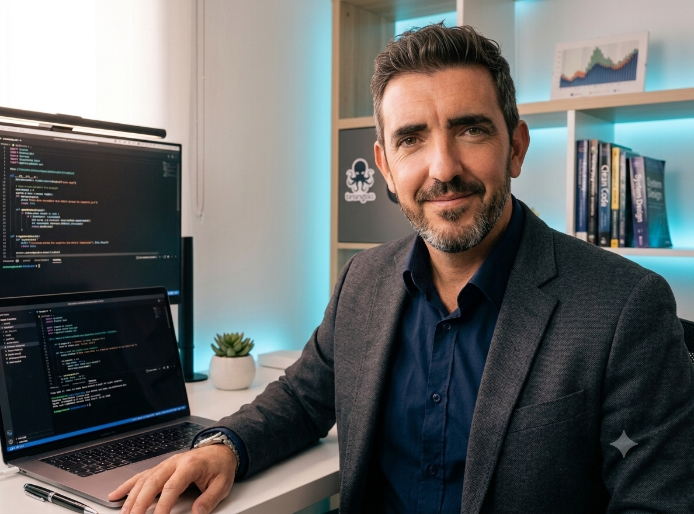

Cras-Forum
Empresa especializada en la creación de e-commerce y su posterior integración de productos en diferentes marketplaces como Amazon, Zalando, eBay y Fnac.
Desarrollador web con una visión transversal: programación, e-commerce, CMS, automatización, IA y ciberseguridad. Tecnología aplicada a problemas reales, con aprendizaje continuo como motor.

const profile = {
focus: "digital products",
mindset: "always learning",
stack: ["web", "automation", "AI"]
};Desarrollador Web con sólida formación en entornos digitales y ciberseguridad. Apasionado por la tecnología, con espíritu de aprendizaje continuo y capacidad de adaptación a nuevos desafíos.
Mi experiencia combina programación web, administración de sistemas y redes, auditorías de ciberseguridad, diseño gráfico y entornos e-commerce. También trabajo con CMS y automatización de procesos para mejorar flujos de trabajo digitales.
Empresa especializada en la creación de e-commerce y su posterior integración de productos en diferentes marketplaces como Amazon, Zalando, eBay y Fnac.
Administración integral de la plataforma educativa Moodle: creación y configuración de cursos, gestión de usuarios, roles y matrículas, y soporte técnico a la comunidad. Gestión y mantenimiento del sitio web corporativo, incluyendo optimización, actualización de contenidos y funcionamiento técnico.
Python · PHP · HTML · CSS
PrestaShop · WordPress · Drupal · Shopify
n8n · Make · optimización de procesos y flujos
Aplicación práctica de soluciones de IA en proyectos digitales
Auditorías · pentesting · sistemas y redes
E-commerce · marketplaces · diseño gráfico
miguel@portfolio:~$ help
Comandos:
Si buscas un perfil capaz de moverse entre desarrollo web, plataformas, e-commerce, automatización y tecnología aplicada, estaré encantado de conversar.